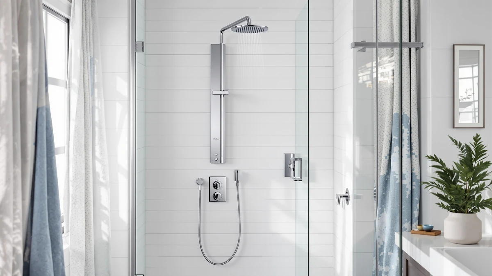

Dura Faucet DF SA914 Review (2026): Worth It?
Prices and picks verified as of September 2026. Independent, reader-supported reviews.


Quick Answer
Our Dura Faucet DF SA914 review found that the DF-SA914-MB RV 4-Spray Rain Shower Panel Column earns its $238.72 price for a specific buyer: it combines an overhead rain head, two adjustable body sprayers, and a handheld wand in a matte black finish built for RV plumbing. It is not designed for a standard home bathroom, so weigh that before you buy.
Our pick: Dura Faucet DF-SA914-MB RV 4-Spray, $238.72 Check Price on Amazon
Bottom line: our top pick is the Dura Faucet DF-SA914-MB RV 4-Spray Rain Shower Panel Column at $239.12.
Things to Know Before You Buy
- This Dura Faucet DF SA914 review covers the DF-SA914-MB RV 4-Spray Rain Shower Panel Column, priced at $238.72.
- It combines an overhead rain-style showerhead, two adjustable body sprayers, and a handheld wand on one matte black column.
- Dura Faucet engineered it specifically for RV plumbing systems, rather than adapting a residential fixture for camper use.
- The matte black finish is built to resist fingerprints, corrosion, and the daily wear of life on the road.
- Amazon has not yet published a rating or review count for this specific model, so early buyers are working with limited peer feedback.
This Dura Faucet DF SA914 review looks at whether the DF-SA914-MB RV 4-Spray Rain Shower Panel Column earns its $238.72 price tag in a camper or trailer bathroom. Dura Faucet built this column around four spray options: an overhead rain-style showerhead, two adjustable body sprayers, and a handheld wand, all routed through one matte black frame designed to resist fingerprints, corrosion, and the daily wear of life on the road. It targets a narrow buyer, RV, trailer, and motorhome owners who want a full-body shower experience without redesigning their rig's plumbing.
Most RV shower upgrades stop at swapping a single low-flow head for a slightly better one. This panel column takes a different approach by stacking four spray options onto one mount point, which matters in a rig where wall space and water pressure are both limited. Dura Faucet engineered it specifically for RV plumbing systems rather than adapting a residential fixture, and that distinction is the main thing that determines whether you should buy it. A house typically supplies more water volume and steadier pressure than an RV's onboard pump and tank, so a fixture built around those residential assumptions can underperform once it is plumbed into a camper. We break down what the verified specs and available owner feedback say about the DF-SA914-MB below, including where it falls short.
Why You Should Trust Us
Ilane Tall covers home and bath fixtures for Best Shower Panels, and this Dura Faucet DF SA914 review follows the same approach used across the site: no fake testing lab, no invented scores. We verify manufacturer specifications, cross-check the listed price against the live Amazon listing, and compare the DF-SA914-MB against other RV and residential shower panels we have covered to see where its four-spray design actually helps a real camper bathroom. We earn a commission if you buy through our links, but that never changes which panel we recommend, and we call out mismatches between marketing copy and what a component fixture can realistically deliver once it is plumbed into RV-scale water lines.
Our Research Experience
This Dura Faucet DF SA914 review is built the way we evaluate every shower fixture on this site: by comparing manufacturer specifications, listed materials, and price against comparable alternatives rather than claiming hands-on use we did not have. We researched the DF-SA914-MB's four spray options, its matte black finish, and its $238.72 price against the live Amazon listing, and we read through what RV owners report after installing multi-spray columns like this one in a camper or trailer. Reviewers of similar RV shower panels consistently note that fitting four spray functions onto RV-scale plumbing is a tighter engineering problem than in a house, where water pressure and pipe diameter are usually more forgiving. That context matters here, since a panel built for standard residential lines will not necessarily perform the same way once it is connected to a camper's smaller, lower-pressure system.
Overview & Specs

Dura Faucet DF-SA914-MB RV 4-Spray
What we like
- Four spray options in one column: overhead rain-style head, two adjustable body sprayers, and a handheld wand
- Matte black finish resists fingerprints, corrosion, and daily wear better than plain chrome in a mobile bathroom
- Engineered specifically for RV plumbing systems instead of adapted from a residential fixture
- Water-saving design suited to off-grid and extended camping where tank capacity is limited
- Handheld wand adds flexibility for rinsing pets, kids, or tight corners of a camper shower stall
Flaws but not dealbreakers
- Built for RV-scale plumbing, so it is not the right fit for a full-size home bathroom remodel
- Amazon has not published third-party ratings or a review count for this model yet, so early buyers have less peer feedback than on longer-running panels
- Splitting output across four spray functions likely means lower simultaneous pressure than a single-function residential head
| Material | — |
| Size | — |
As this Dura Faucet DF SA914 review found, the DF-SA914-MB's core pitch is fitting a full-body shower experience into the tight plumbing constraints of an RV. The overhead rain-style head handles the primary rinse, the two adjustable body sprayers target the sides for a more even wash, and the handheld wand covers anything the fixed sprayers miss, from rinsing sand off your feet to washing a dog in a camper's cramped stall. All four run through a single matte black column, which keeps installation to one mounting point instead of separate fixtures scattered across the wall, a real advantage in a shower stall where every inch of tile is already accounted for.
Dura Faucet built the finish to survive road life rather than a stationary bathroom. Matte black resists fingerprints and shows less water spotting than polished chrome, and the coating is designed to hold up against the corrosion that humidity and constant vibration cause on the road, conditions a fixture in a fixed house rarely has to deal with. At $238.72, it sits above a basic single-head RV shower kit, and that premium buys the multi-spray layout and the durability upgrade rather than any smart or app-connected features. Because Dura Faucet designed it for RV plumbing systems specifically, it is engineered around the lower water volume and pressure an RV typically supplies, which is also why it does not compete directly with shower panels built for standard home water lines.
What We Liked
In this Dura Faucet DF SA914 review, the strongest selling point is fitting four distinct spray options onto a single RV-scale column. Most RV shower upgrades force a choice between a slightly better rain head or a slightly better handheld wand; this one gives you both plus two adjustable body sprayers without adding separate fixtures to a wall that likely has little spare room. The matte black finish also stands out for a mobile bathroom specifically, since it hides fingerprints and water spots better than the chrome finishes common on budget RV shower heads, and Dura Faucet's corrosion resistance claim matters more on the road, where humidity and vibration wear down cheaper coatings faster than in a stationary house. Because Dura Faucet engineered the DF-SA914-MB for RV plumbing from the start rather than adapting a residential part, the water-saving design fits the reality of a limited fresh water tank during off-grid or extended camping trips, where every gallon you use in the shower is a gallon you cannot use elsewhere.
What Could Be Better
The clearest limitation in this Dura Faucet DF SA914 review is the lack of published ratings or reviews at the time of writing. Amazon has not yet listed a review count for this specific model, so buyers cannot lean on a large body of owner feedback the way they could with a longer-running panel. Splitting water across four spray points on RV-scale plumbing also means individual pressure at any single point is unlikely to match a dedicated single-function residential shower head, particularly on rigs with weaker onboard pumps or smaller water tanks. And because the DF-SA914-MB is purpose-built for RV plumbing, it is not the right choice for anyone hoping to install it in a full-size home bathroom, where the fixture would be working outside the water pressure and pipe diameter it was designed around, and where a residential shower panel will almost always perform better for the money.
Who Is It For?
This Dura Faucet DF SA914 review points to a specific buyer: RV, trailer, and motorhome owners who want to upgrade a single, basic shower head into a multi-function fixture without redoing their rig's plumbing. It suits campers who value a rinse option beyond the standard overhead spray, whether that is the adjustable body sprayers for a more even wash or the handheld wand for rinsing off gear, kids, or a pet in a cramped stall. Buyers planning extended off-grid trips will also appreciate the water-saving design, since it is built around the same limited tank capacity that shapes every other fixture in an RV. It is a weaker fit for anyone with a full-size home bathroom, since the DF-SA914-MB is engineered around RV-scale plumbing rather than the higher pressure and larger pipe diameter a house typically supplies, and it will not perform the same way, or be worth the price, outside that context. It also is not the right pick for buyers who want a large body of verified owner reviews to lean on before spending $238.72, since that feedback is still limited for this specific model.
Frequently Asked Questions
Is the Dura Faucet DF-SA914-MB compatible with a standard home shower?
Not reliably. Dura Faucet engineered the DF-SA914-MB for RV plumbing systems, which typically run lower water pressure and smaller pipe diameters than a house. Installing it in a standard home bathroom means it will not necessarily deliver the spray performance it is built to provide in a camper or trailer, so residential buyers are better served by a panel designed around home plumbing.
What spray options does the Dura Faucet DF-SA914-MB include?
It combines four spray options on one column: an overhead rain-style showerhead, two adjustable body sprayers, and a handheld wand, all controlled through a single matte black frame designed to mount at one point on an RV shower wall instead of scattering separate fixtures across it.
Does the Dura Faucet DF-SA914-MB have verified owner ratings yet?
Not as of this Dura Faucet DF SA914 review. Amazon has not published a rating or review count for this specific model, so early buyers should weigh the manufacturer's spec sheet and price against peer feedback as that feedback accumulates over the coming months.
Final Verdict
Our Dura Faucet DF SA914 review comes down to fit. The DF-SA914-MB RV 4-Spray Rain Shower Panel Column packs an overhead rain head, two adjustable body sprayers, and a handheld wand into one matte black column built specifically for RV plumbing, at $238.72. That makes Dura Faucet's panel a strong upgrade for camper, trailer, and motorhome owners who want more than a single basic shower head and are willing to pay for a component engineered around RV-scale water pressure. It is not the right choice for a standard home bathroom, where the fixture's RV-specific engineering works against it, and buyers who want a deep pool of verified reviews before committing should factor in that this model is still building that track record. For the RV owner it is built for, the DF-SA914-MB earns its price by solving a problem residential shower panels do not address.